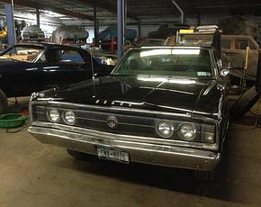

57 Cadillac
57 Caddy coming in to be brought back to life,and maybe some customizations along the way.

67 Charger
Black on Black combo charger found hidden in a garage in Scarsdale, NY. She is coming in for a full overhaul.
69 Charger
This 69 Charger came in looking like swiss chesse, watch as this classic is brought back to life.
78 Cadillac
78 Caddy, came in for some paint restoration .
Bel Air
This timeless classic has come in to be brought back to showroom floor condition.
1978 Macho Trans Am
This is a nicely loaded and extremely rare Macho Trans Am as modified by the Mecham Brothers out of Mecham Pontiac in Phoenix, AZ. Purchased by Melvin, this car is now under restoration after waiting a couple of years to get to it.
1977 Smokey and The Bandit Year One
Smokey lost radio contact with the Bandit, we hope to reconnect that connection.